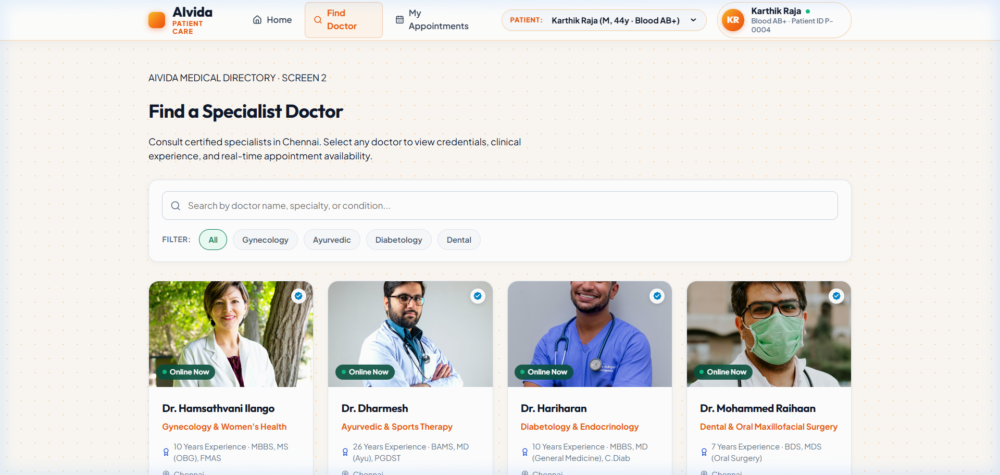
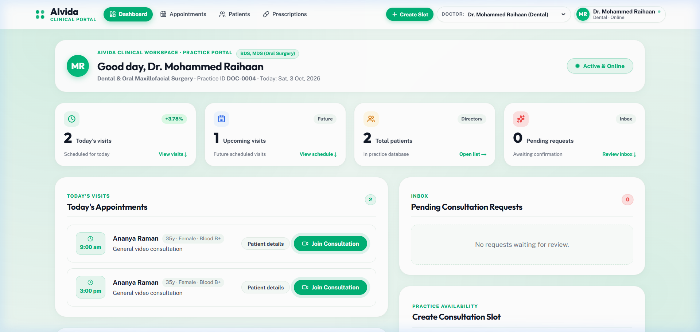
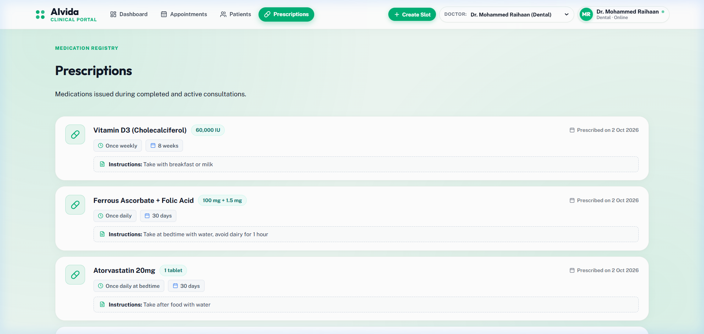
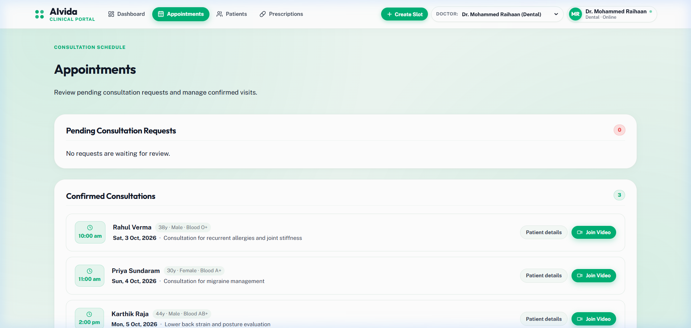

Telehealth Simplified
for Everyone
A plain-language guide to how patients, doctors, and modern clinical technology work together without paperwork, travel, or waiting rooms.
The Big Picture: What is AIvida?
Visiting a doctor in person often means fighting traffic, sitting in crowded waiting rooms, and losing paper prescriptions. AIvida re-imagines this experience into three clean pillars.
Zero Waiting Rooms
Patients search certified specialists by department, pick an open slot that fits their daily schedule, and connect face-to-face via secure video in seconds.
Doctor's Clinical Cockpit
Instead of rummaging through paper folders, physicians get an organized digital workspace with live appointment queues, patient vitals, and 1-click video consultations.
Never Lose a Prescription
Doctors write digital prescriptions with accurate dosages and instructions. Once signed, they appear instantly in the patient's phone and are saved permanently.
The Patient Care Portal
Hosted at localhost:3001, this portal gives patients complete autonomy over their healthcare journey in a clean, friendly interface.
Find the Best Doctor
Browse by specialty (Cardiology, Dermatology, General Practice) with ratings, availability, and qualifications.
1-Click Appointment Booking
Pick convenient morning, afternoon, or evening slots with instant automated calendar confirmation.
No Downloads Required
Join the encrypted consultation directly inside your standard web browser with zero plugins or app downloads.
Permanent Health History
Access your past visits, active prescriptions, and physician notes whenever you need them.

The Doctor Clinical Portal
Hosted at localhost:3000, this is the doctor's command center—streamlining patient queues, telemetry, and clinical documentation.
Practice Availability Toggle
One-touch "Active & Online" button lets doctors pause or resume taking appointments instantly in real time.
Clinical Telemetry & Metrics
Live tiles track today's appointments, completed visits, pending consultations, and diagnostic progress.
Consultation Schedule
Visual queue of patients with time slots, consultation types, and instant "Start Video Call" action buttons.
Digital E-Prescription Generator
Quickly prescribe medications with pre-filled dosages, frequency chips, and patient diet instructions.

The Happy Path: From Symptoms to Recovery
Here is the step-by-step journey of a real patient using AIvida. Total elapsed time: under 15 minutes!
Search Doctor
Patient feels unwell, opens Patient Portal, selects General Medicine, and reviews available doctors.
Book Slot
Picks an upcoming 10:00 AM slot. The system locks the slot and confirms the appointment in under 1 second.
Join Video Room
At 10:00 AM, both doctor and patient click "Join Consultation". Encrypted HD video connects in the browser.
Examine & Counsel
Doctor reviews patient telemetry, discusses symptoms, checks vitals, and formulates the treatment plan.
E-Prescription
Doctor signs the digital Rx. Medicine, dosage, and schedule appear on the patient's screen immediately.
Working Block Diagram: Animated Flow
Click the interactive buttons below to trigger simulated data flows and watch packets travel between the patient, cloud server, and doctor in real time.
USER INTERFACE (BROWSER/MOBILE)
- Doctor Discovery & Search
- Live Slot Reservation
- One-Click Video Entrance
- Digital Prescription Viewer
LOGIC & PERSISTENCE
- REST API & Slot Management
- SQLite / SQL Database
- Instant State Synchronization
ENCRYPTED AUDIO/VIDEO PIPELINE
- Sub-second Low Latency
- End-to-End Encryption
- In-Session Interactive Chat
CLINICAL WORKSPACE
- Practice Online/Offline Switch
- Live Consultation Schedule
- Clinical Telemetry & Vitals
- E-Prescription Authoring
Inside the Live System
Live captures from the running AIvida application, demonstrating clear medical hierarchy and responsive component arrangement.


Why AIvida Wins for Everyone
AIvida creates a win-win-win ecosystem for patients, healthcare workers, and healthcare practice operators.
For Patients
- ✓ Care delivered directly to your home
- ✓ No traffic, parking fees, or crowded lobbies
- ✓ Clear, typed electronic prescriptions
- ✓ Full privacy with encrypted video calls
For Doctors
- ✓ Single-screen clinical cockpit
- ✓ Toggle online availability anytime
- ✓ 1-click video consultations
- ✓ 90% less administrative paperwork
For Clinics
- ✓ Modern web standards (zero app install friction)
- ✓ Instant automated appointment scheduling
- ✓ High patient satisfaction and repeat visits
- ✓ Scalable, resilient cloud architecture